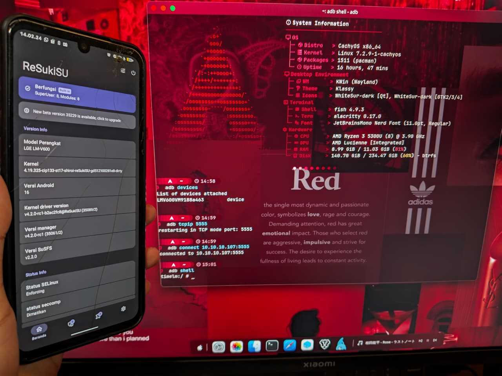
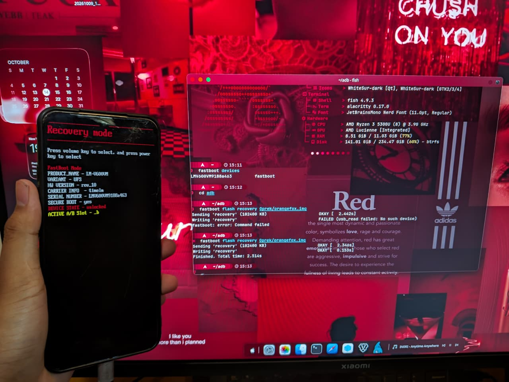
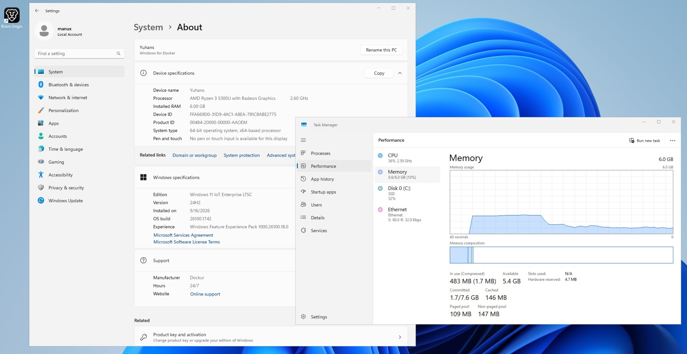

Custom ROM AOSP
LineageOS, PixelOS, crDroid dengan sistem bersih dan stabil.
Modifikasi Perangkat & Sistem
Layanan profesional penanganan modifikasi Android, flashing firmware, unbrick, debloat, dan konfigurasi sistem operasi oleh Fakhri Yuhans Nurfawwas.


LineageOS, PixelOS, crDroid dengan sistem bersih dan stabil.
Pemasangan OrangeFox, TWRP, atau PBRP untuk kemudahan flashing.
Root via ResukiSU, Magisk, atau APatch dengan Play Integrity lolos.
Penyetelan kernel kustom untuk efisiensi baterai dan suhu stabil.
Pembersihan aplikasi bawaan vendor via ADB tanpa risiko bootloop.

Pemulihan perangkat bootloop MediaTek via SP Flash Tool dan Fastboot.
Penanganan ponsel mati suri Qualcomm Snapdragon mode EDL 9008.
Pembersihan telemetri dan bloatware Windows 10/11 demi RAM lega.
Instalasi Windows 11 LTSC + CachyOS Linux dengan GRUB rapi.
Pencadangan partisi vital jaringan dan IMEI sebelum oprek.